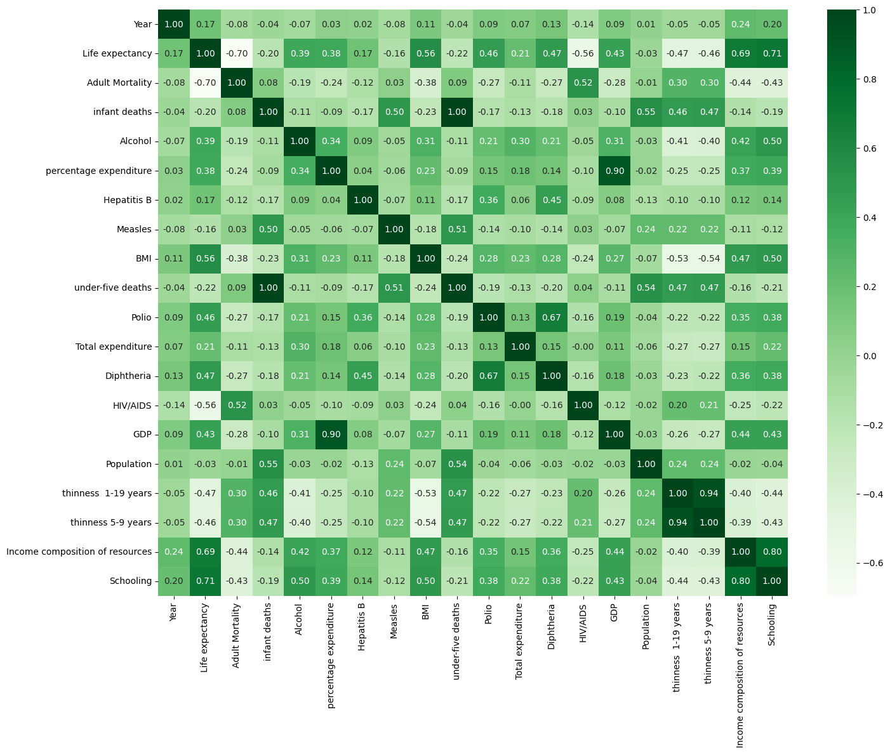
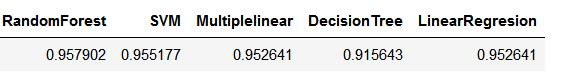
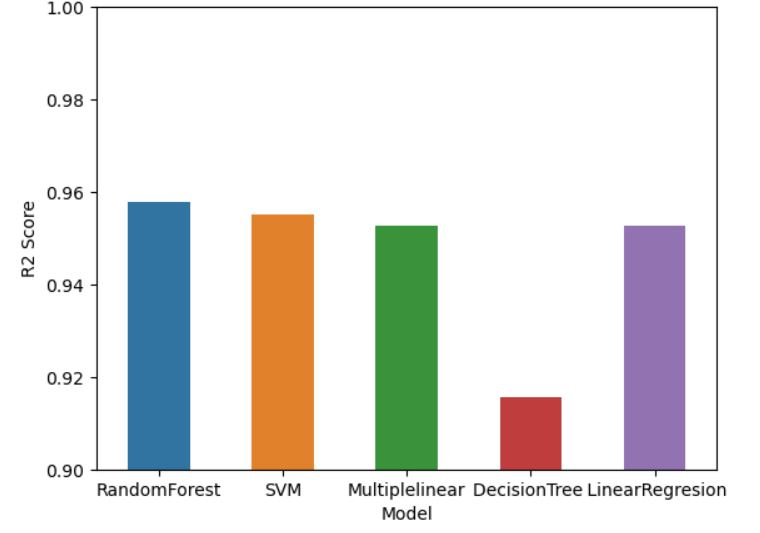

In this post, we have applied some ML and DL algotihms on a dataset compiled from previous studies in the literature about spray cooling systems. The target variable is Nusselt number (Nu). The applying methods are 1- Random Forest Regression (RFR) 2- Support Vector Regression (SVR) 3- Decision Tree Regression (DTR) 4- XGBoost 5- LightGBM and 6- Multilayer Perception (MLP)
1- Random Forest Regression
Importing needed libraries:
import pandas as pd
import numpy as np
import seaborn as sns
import matplotlib.pyplot as plt
from sklearn.impute import SimpleImputer
from sklearn.metrics import r2_score
from sklearn.preprocessing import StandardScaler
from sklearn.model_selection import train_test_split
from sklearn.ensemble import RandomForestRegressor
from sklearn.preprocessing import PolynomialFeatures
from sklearn.linear_model import LinearRegression
from sklearn.tree import DecisionTreeRegressor
from sklearn.svm import SVR
from sklearn.metrics import r2_scoreLoading dataset:
url = 'https://raw.githubusercontent.com/mlori77/ANN/main/heatml.csv'
data = pd.read_csv(url)Encoding:
data.columns = [a.strip() for a in column]
fluid_dummy = pd.get_dummies(data['Fluid'], drop_first = True)Correlation matrix:
data.drop(['Fluid', 'SAT'], inplace = True, axis = 1)
corr_data = data.copy()
correlation_matrix = corr_data.corr()
plt.figure(figsize=(16,12))
sns.heatmap(correlation_matrix, annot=True,fmt=".2f", cmap="Greens")
plt.show()get_dummies: Convert categorical variable into dummy/indicator variables. Each variable is converted in as many 0/1 variables as there are different values. Columns in the output are each named after a value; if the input is a DataFrame, the name of the original variable is prepended to the value
A correlation matrix is a statistical tool employed to assess the relationship between two variables within a dataset. Represented as a table, each cell in the matrix contains a correlation coefficient. A coefficient of 1 signifies a strong positive relationship between variables, 0 indicates a neutral relationship, and -1 suggests a strong negative relationship.
## Correlation matrix
correlation_matrix = corr_data.corr()
plt.figure(figsize=(16,12))
sns.heatmap(correlation_matrix, annot=True,fmt=".2f", cmap="Greens")
plt.show()Here we have the correlation matrix for our data:

Split arrays or matrices into random train and test subsets with test size of 20%:
## Splitting the dataset into the Training set and Test set
Y = pd.DataFrame(data['Life expectancy'], columns = ['Life expectancy'])
data.drop(['Life expectancy'], inplace = True, axis = 1)
all_data = pd.concat([data, country_dummy, status_dummy], axis = 1)
X_train, X_test, y_train, y_test = train_test_split(all_data, Y, test_size = 0.2, random_state = 0)
y_test.columns = ['y_test']Implement, prediction and evaluation of Random Forest Regression:
## Random Forest Regression model
regressor = RandomForestRegressor(n_estimators = 10, random_state = 0)
regressor.fit(X_train, y_train.values.ravel())
#Predicting the Test set results
y_pred = pd.DataFrame(regressor.predict(X_test), columns= ['y_pred'])
y_test.index = y_pred.index
random_forest_result = pd.concat([y_pred, y_test], axis = 1)
# Evaluating the Model Performance
r2_random_forest = r2_score(y_test, y_pred)Implement, prediction and evaluation of Support Vector Regression (SVR):
##Support Vector Regression (SVR) model
# Feature scaling
sc_X = StandardScaler()
sc_y = StandardScaler()
X_train_scaled = sc_X.fit_transform(X_train)
y_train_scaled = sc_y.fit_transform(y_train)
regressor = SVR(kernel = 'rbf')
regressor.fit(X_train_scaled, y_train_scaled.ravel())
##Predicting the Test set results
y_pred = regressor.predict(sc_X.transform(X_test))
y_pred = pd.DataFrame(sc_y.inverse_transform(pd.DataFrame(y_pred)), columns= ['y_pred'])
y_test.index = y_pred.index
svr_result = pd.concat([y_pred, y_test], axis = 1)
# Evaluating the Model Performance
r2_svm = r2_score(y_test, y_pred)Implement, prediction and evaluation of Multiple Linear Regression:
##Multiple Linear Regression model
regressor = LinearRegression()
regressor.fit(X_train, y_train)
# Predicting the Test set results
y_pred = pd.DataFrame(regressor.predict(X_test), columns= ['y_pred'])
y_test.index = y_pred.index
random_forest_result = pd.concat([y_pred, y_test], axis = 1)
# Evaluating the Model Performance
r2_multiple_linear_regression = r2_score(y_test, y_pred)Implement, prediction and evaluation of Decision Tree Regression:
## Decision Tree Regression model
regressor = DecisionTreeRegressor(random_state = 0)
regressor.fit(X_train, y_train)
# Predicting the Test set results
y_pred = pd.DataFrame(regressor.predict(X_test), columns= ['y_pred'])
y_test.index = y_pred.index
random_forest_result = pd.concat([y_pred, y_test], axis = 1)
# Evaluating the Model Performance
r2_decision_tree_regression = r2_score(y_test, y_pred)Implement, prediction and evaluation of Linear Regression:
def flatten(l):
return [item for sublist in l for item in sublist]
# Set up and fit the linear regressor
lin_reg = LinearRegression()
lin_reg.fit(X_train, y_train)
# Flatten the prediction and expected lists
predicted = flatten(lin_reg.predict(X_test))
expected = flatten(y_test.values)
import plotly.express as px
# Put data to plot in dataframe
df_plot = pd.DataFrame({'expected':expected, 'predicted':predicted})
# Make scatter plot from data
fig = px.scatter(
df_plot,
x='expected',
y='predicted',
title='Predicted vs. Actual Values')
# Add straight line indicating perfect model
fig.add_shape(type="line",
x0=30, y0=30, x1=90, y1=90,
line=dict(
color="Red",
width=4,
dash="dot",
)
)
# Show figure
fig.show()
error = np.sqrt(np.mean((np.array(predicted) - np.array(expected)) ** 2))
print(f"RMS: {error:.4f} ")
r2=r2_score(expected, predicted)
print(f"R2: {round(r2,4)}") Comparison of model results:
##Comparison of model results
results = pd.DataFrame([[
r2_random_forest,
r2_svm,
r2_multiple_linear_regression,
r2_decision_tree_regression,
r2]], columns = ['RandomForest', 'SVM', 'Multiplelinear', 'DecisionTree ', ' LinearRegresion'])
ax = sns.barplot(results, width = 0.5)
ax.set(xlabel='Model', ylabel='R2 Score')
plt.ylim(0.9, 1)As you can see, our models have a good prediction (R_square close to 1)



All codes:
## Importing the libraries
import pandas as pd
import numpy as np
import seaborn as sns
import matplotlib.pyplot as plt
from sklearn.impute import SimpleImputer
from sklearn.metrics import r2_score
from sklearn.preprocessing import StandardScaler
from sklearn.model_selection import train_test_split
from sklearn.ensemble import RandomForestRegressor
from sklearn.preprocessing import PolynomialFeatures
from sklearn.linear_model import LinearRegression
from sklearn.tree import DecisionTreeRegressor
from sklearn.svm import SVR
## Importing the dataset
data = pd.read_csv("Life Expectancy Data.csv")
## Correcting column names
column = data.columns.to_list()
data.columns = [a.strip() for a in column]
## Taking care of missing data
imputer = SimpleImputer(missing_values=np.nan, strategy="median")
data['Life expectancy'] = imputer.fit_transform(data[['Life expectancy']])
data['Adult Mortality'] = imputer.fit_transform(data[['Adult Mortality']])
data['Alcohol'] = imputer.fit_transform(data[['Alcohol']])
data['Hepatitis B'] = imputer.fit_transform(data[['Hepatitis B']])
data['BMI'] = imputer.fit_transform(data[['BMI']])
data['Polio'] = imputer.fit_transform(data[['Polio']])
data['Total expenditure'] = imputer.fit_transform(data[['Total expenditure']])
data['Diphtheria'] = imputer.fit_transform(data[['Diphtheria']])
data['GDP'] = imputer.fit_transform(data[['GDP']])
data['Population'] = imputer.fit_transform(data[['Population']])
data['thinness 1-19 years'] = imputer.fit_transform(data[['thinness 1-19 years']])
data['thinness 5-9 years'] = imputer.fit_transform(data[['thinness 5-9 years']])
data['Income composition of resources'] = imputer.fit_transform(data[['Income composition of resources']])
data['Schooling'] = imputer.fit_transform(data[['Schooling']])
## Encoding of dependent variables
country_dummy = pd.get_dummies(data['Country'], drop_first = True)
status_dummy = pd.get_dummies(data['Status'], drop_first = True)
data.drop(['Country', 'Status'], inplace = True, axis = 1)
corr_data = data.copy()
## Correlation matrix
##correlation_matrix = corr_data.corr()
##plt.figure(figsize=(16,12))
##sns.heatmap(correlation_matrix, annot=True,fmt=".2f", cmap="Greens")
##plt.show()
## Splitting the dataset into the Training set and Test set
Y = pd.DataFrame(data['Life expectancy'], columns = ['Life expectancy'])
data.drop(['Life expectancy'], inplace = True, axis = 1)
all_data = pd.concat([data, country_dummy, status_dummy], axis = 1)
X_train, X_test, y_train, y_test = train_test_split(all_data, Y, test_size = 0.2, random_state = 0)
y_test.columns = ['y_test']
## Random Forest Regression model
regressor = RandomForestRegressor(n_estimators = 10, random_state = 0)
regressor.fit(X_train, y_train.values.ravel())
#Predicting the Test set results
y_pred = pd.DataFrame(regressor.predict(X_test), columns= ['y_pred'])
y_test.index = y_pred.index
random_forest_result = pd.concat([y_pred, y_test], axis = 1)
# Evaluating the Model Performance
r2_random_forest = r2_score(y_test, y_pred)
##Support Vector Regression (SVR) model
# Feature scaling
sc_X = StandardScaler()
sc_y = StandardScaler()
X_train_scaled = sc_X.fit_transform(X_train)
y_train_scaled = sc_y.fit_transform(y_train)
regressor = SVR(kernel = 'rbf')
regressor.fit(X_train_scaled, y_train_scaled.ravel())
##Predicting the Test set results
y_pred = regressor.predict(sc_X.transform(X_test))
y_pred = pd.DataFrame(sc_y.inverse_transform(pd.DataFrame(y_pred)), columns= ['y_pred'])
y_test.index = y_pred.index
svr_result = pd.concat([y_pred, y_test], axis = 1)
# Evaluating the Model Performance
r2_svm = r2_score(y_test, y_pred)
##Multiple Linear Regression model
regressor = LinearRegression()
regressor.fit(X_train, y_train)
# Predicting the Test set results
y_pred = pd.DataFrame(regressor.predict(X_test), columns= ['y_pred'])
y_test.index = y_pred.index
random_forest_result = pd.concat([y_pred, y_test], axis = 1)
# Evaluating the Model Performance
r2_multiple_linear_regression = r2_score(y_test, y_pred)
## Decision Tree Regression model
regressor = DecisionTreeRegressor(random_state = 0)
regressor.fit(X_train, y_train)
# Predicting the Test set results
y_pred = pd.DataFrame(regressor.predict(X_test), columns= ['y_pred'])
y_test.index = y_pred.index
random_forest_result = pd.concat([y_pred, y_test], axis = 1)
# Evaluating the Model Performance
r2_decision_tree_regression = r2_score(y_test, y_pred)
##Comparison of model results
results = pd.DataFrame([[
r2_random_forest,
r2_svm,
r2_multiple_linear_regression,
r2_decision_tree_regression,
r2]], columns = ['RandomForest', 'SVM', 'Multiplelinear', 'DecisionTree ', ' LinearRegresion'])
ax = sns.barplot(results, width = 0.5)
ax.set(xlabel='Model', ylabel='R2 Score')
plt.ylim(0.9, 1)
## me
def flatten(l):
return [item for sublist in l for item in sublist]
# Set up and fit the linear regressor
lin_reg = LinearRegression()
lin_reg.fit(X_train, y_train)
# Flatten the prediction and expected lists
predicted = flatten(lin_reg.predict(X_test))
expected = flatten(y_test.values)
import plotly.express as px
# Put data to plot in dataframe
df_plot = pd.DataFrame({'expected':expected, 'predicted':predicted})
# Make scatter plot from data
fig = px.scatter(
df_plot,
x='expected',
y='predicted',
title='Predicted vs. Actual Values')
# Add straight line indicating perfect model
fig.add_shape(type="line",
x0=30, y0=30, x1=90, y1=90,
line=dict(
color="Red",
width=4,
dash="dot",
)
)
# Show figure
fig.show()
error = np.sqrt(np.mean((np.array(predicted) - np.array(expected)) ** 2))
print(f"RMS: {error:.4f} ")
r2=r2_score(expected, predicted)
print(f"R2: {round(r2,4)}")